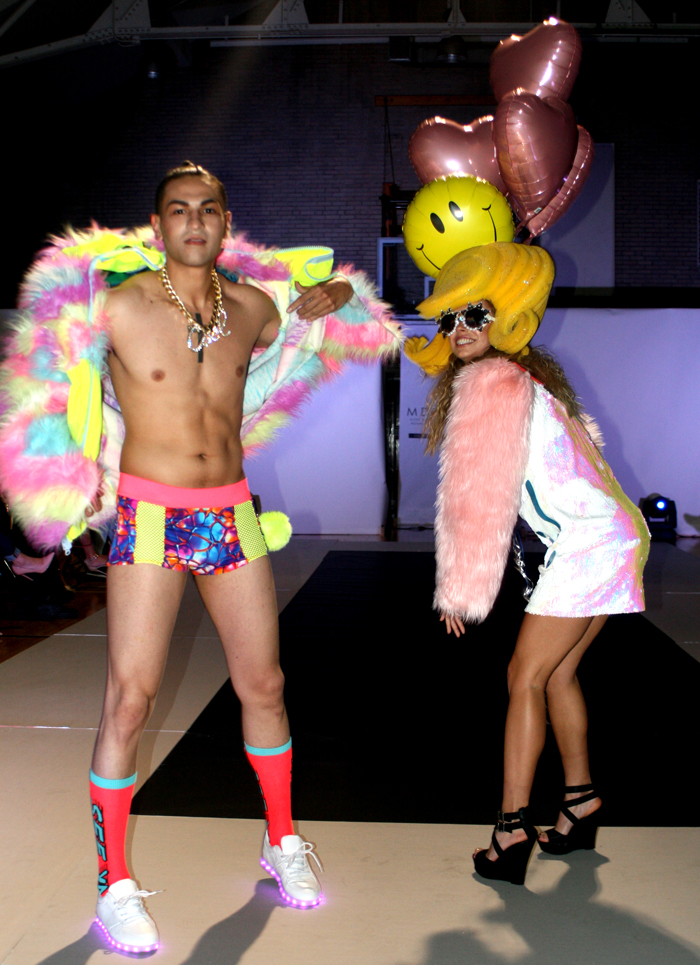
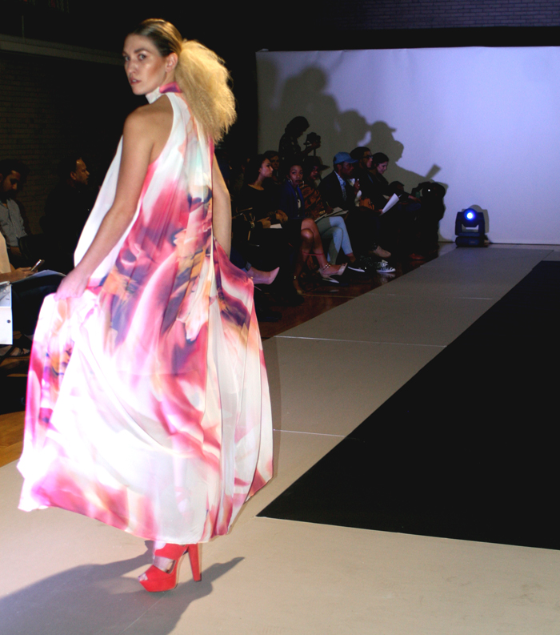
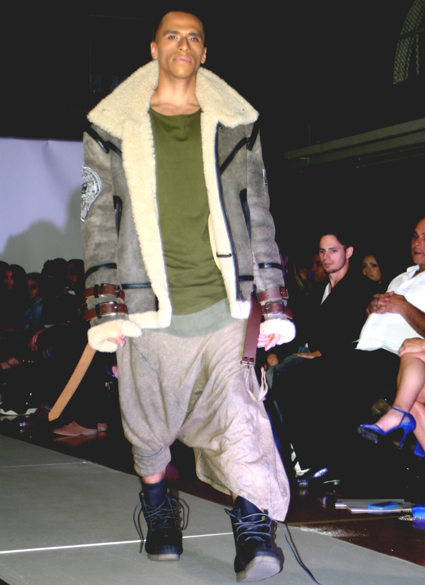
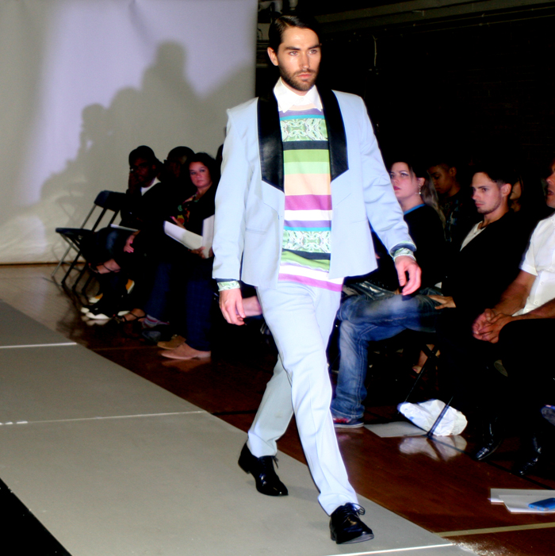

Modern Day Threads Runway
Fashion lovers gathered at Avalon Park for Jinspired's Modern Day Thread's fashion show. The hodge podged fashion preview featured aspiring and locally established fashion designers, whose designs all varied in color and shape.
Couplets of black chairs outlined an Oreo colored runway. Towering behind the black and white carpet were three white walls, creating a beautiful New York Fashion Week mood. And as the music staggered on, the elusive show began.
With no introduction, the first designer Randall Hill presented their collection. Colorful is only its partial description. It spilled down the runway, vibrant and sunny. Models flounced carefree in mini plastic skater skirts and neon banded shirts. Guys tottered out in teeny patterned speedos, chest erect, and shoulders dipped in fur. The collection favored a weekend on Jersey Shore with its big plastic hair and miniature plastic pieces. Is this collection ready to wear? Perhaps on vacation when looking like fun is the motive.

As the show draped on the order of the show became fuzzy. The lack of Introductions, titles, or breaks muddled up the awareness of which collection was whose. The program aided in ordering the designers.
A parade of sleek, sharp cut slacks graced the floor. In deep, sable tones and earthy shades, the next designer, Kwame Nkruma, successfully produced a cohesive and impressively constructed collection. Each piece merged sports structure and modern style. Some pieces laid with plaid insets and some with impeccable creative patterns.
Contrasting the structured suits and cleanly cut jackets, swarms of soft draped dresses shifted in a new designer. The Gidi collection featured gorgeous day and night dresses. Jumpsuits crafted to the body and accentuated feminine curves. Wise fabric choice allowed for the most grateful movement for the draped dresses. The collections designs also incorporated lace, high waist, wide leg, and jumpsuit silhouettes in its construction.

Following the breeze of the ethereal collection, a futuristic energy quickly fell on the floor as a black bubble suit marched from behind the white walls. This designer remained a mystery until their third look. Iridium's notorious logo shone on a long tee. The Chicago based street brand's showing collection took the brand up a notch on the design tip. With way more experimentation with cut and draping, Iridium premiered futuristic and forward styles. Comfortable khaki's and deep greens scattered throughout the presentation. This new collection is proof of artistic and design growth.

The next designer drew inspiration from the high school trope and tradition of letterman jackets and track sweaters. Chicago Playground simply reimagined existing forms of bombers, sweaters, and jackets. Positively, the color ways of the outerwear added an exclusivity factor to the line and allows it to be more than just "jackets."

A cacophonous collection closed the show, Chevalier Home. With no evidence of theme or unified designed style, the line seemed to be a great collage of all the things the designer can do. Sporadically, hints of individuality and pure designed popped up as the collection rolled on. New age 70's suits and tech designed were only a piece of the styles in the collection.
Jinspired closed the show chagrined at the final production, leaving the audience with remarks of shame; however, although the show lacked in professional production. Its did its job in presenting forward and unique fashions.
For more about Modern Day Threads:
Modern Day Threads on Facebook
photo credits: ciera mckissick
contributing writer: marissa sallie